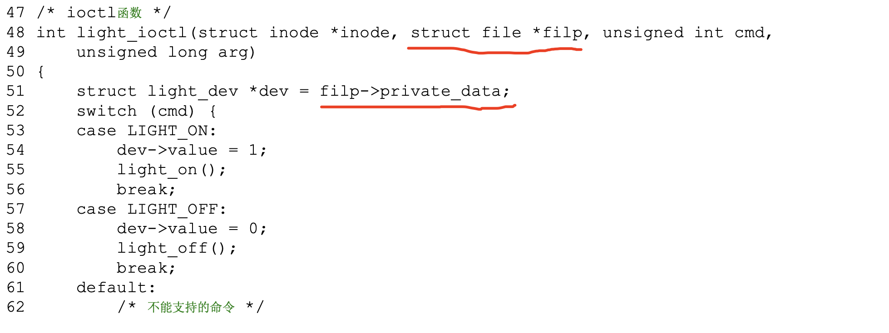

概述
- 这一章主要讲述 Linux 驱动程序开发方向的总结. Linux 驱动 = 软件框架 + 硬件操作
- 本篇描述驱动程序方向的 Hello World 程序
1 如何编译一个内核模块(Hello World 驱动教程)
2 相关联想
- Linux 的 file 结构体, 本身就有一个 private_data 成员, 是一个空指针
- 在驱动程序中, 通过传入 file 结构体, 然后通过它的 private_data 成员拿到具体的设备结构体

3 驱动程序从入门到精通路径
- 1 HelloWorld 教程
- 2 理解 module_init, module_exit, file_operation
-
- 写好驱动程序后, 出现/dev/yourdevfile, 应用层可以 open, read, write, ioctl, 然后驱动程序就真正的和硬件交互(读写指令、数据)
- 3 各自项目实践, 实际和理论相结合
4 一个完整的 hello_drv
- 什么是完整? 包括创建了/dev/hello 文件, 有实现对应 open, close, read, write 操作
A hello_drv.c
#include <linux/module.h>
#include <linux/fs.h>
#include <linux/errno.h>
#include <linux/miscdevice.h>
#include <linux/kernel.h>
#include <linux/major.h>
#include <linux/mutex.h>
#include <linux/proc_fs.h>
#include <linux/seq_file.h>
#include <linux/stat.h>
#include <linux/init.h>
#include <linux/device.h>
#include <linux/tty.h>
#include <linux/kmod.h>
#include <linux/gfp.h>
/* 1. 确定主设备号 */
static int major = 0;
static char kernel_buf[1024];
static struct class *hello_class;
#define MIN(a, b) (a < b ? a : b)
/* 3. 实现对应的open/read/write等函数，填入file_operations结构体 */
static ssize_t hello_drv_read (struct file *file, char __user *buf, size_t size, loff_t *offset)
{
int err;
printk("%s %s line %d\n", __FILE__, __FUNCTION__, __LINE__);
err = copy_to_user(buf, kernel_buf, MIN(1024, size));
return MIN(1024, size);
}
static ssize_t hello_drv_write (struct file *file, const char __user *buf, size_t size, loff_t *offset)
{
int err;
printk("%s %s line %d\n", __FILE__, __FUNCTION__, __LINE__);
err = copy_from_user(kernel_buf, buf, MIN(1024, size));
return MIN(1024, size);
}
static int hello_drv_open (struct inode *node, struct file *file)
{
printk("%s %s line %d\n", __FILE__, __FUNCTION__, __LINE__);
return 0;
}
static int hello_drv_close (struct inode *node, struct file *file)
{
printk("%s %s line %d\n", __FILE__, __FUNCTION__, __LINE__);
return 0;
}
/* 2. 定义自己的file_operations结构体 */
static struct file_operations hello_drv = {
.owner = THIS_MODULE,
.open = hello_drv_open,
.read = hello_drv_read,
.write = hello_drv_write,
.release = hello_drv_close,
};
/* 4. 把file_operations结构体告诉内核：注册驱动程序 */
/* 5. 谁来注册驱动程序啊？得有一个入口函数：安装驱动程序时，就会去调用这个入口函数 */
static int __init hello_init(void) // __init表示只在初始化阶段使用, 模块装载后就扔掉, 释放内存
{
int err;
printk("%s %s line %d\n", __FILE__, __FUNCTION__, __LINE__);
major = register_chrdev(0, "hello", &hello_drv); /* /dev/hello */
hello_class = class_create(THIS_MODULE, "hello_class");
err = PTR_ERR(hello_class);
if (IS_ERR(hello_class)) {
printk("%s %s line %d\n", __FILE__, __FUNCTION__, __LINE__);
unregister_chrdev(major, "hello");
return -1;
}
device_create(hello_class, NULL, MKDEV(major, 0), NULL, "hello"); /* /dev/hello */
return 0;
}
/* 6. 有入口函数就应该有出口函数：卸载驱动程序时，就会去调用这个出口函数 */
static void __exit hello_exit(void)
{
printk("%s %s line %d\n", __FILE__, __FUNCTION__, __LINE__);
device_destroy(hello_class, MKDEV(major, 0));
class_destroy(hello_class);
unregister_chrdev(major, "hello");
}
/* 7. 其他完善：提供设备信息，自动创建设备节点 */
module_init(hello_init);
module_exit(hello_exit);
MODULE_LICENSE("GPL");
B hello_drv_test.c
- 这个是用户空间的测试程序, 对/dev/hello 文件进行写和读
#include <sys/types.h>
#include <sys/stat.h>
#include <fcntl.h>
#include <unistd.h>
#include <stdio.h>
#include <string.h>
/*
* ./hello_drv_test -w abc
* ./hello_drv_test -r
*/
int main(int argc, char **argv)
{
int fd;
char buf[1024];
int len;
/* 1. 判断参数 */
if (argc < 2)
{
printf("Usage: %s -w <string>\n", argv[0]);
printf(" %s -r\n", argv[0]);
return -1;
}
/* 2. 打开文件 */
fd = open("/dev/hello", O_RDWR);
if (fd == -1)
{
printf("can not open file /dev/hello\n");
return -1;
}
/* 3. 写文件或读文件 */
if ((0 == strcmp(argv[1], "-w")) && (argc == 3))
{
len = strlen(argv[2]) + 1;
len = len < 1024 ? len : 1024;
write(fd, argv[2], len);
}
else
{
len = read(fd, buf, 1024);
buf[1023] = '\0';
printf("APP read : %s\n", buf);
}
close(fd);
return 0;
}
5 关于/dev/null 和 /dev/full 等字符设备
- 基于上面的理解,
/dev/null设备的实现就很好实现 -
- 从空设备读取时什么也不返回, 代码如下:
static ssize_t read_null (struct file *file, const char __user *buf, size_t size, loff_t *offset)
{
return 0;
}
-
- 无论用户空间怎么写都写不满, 代码如下:
static ssize_t write_null (struct file *file, const char __user *buf, size_t size, loff_t *offset)
{
return count;
}